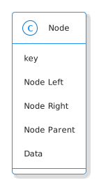

Binary Search Trees
Table of Contents
What is a Binary Search Tree?
Stealing from CLRS.
- A Binary Search Tree is a linked structure of Nodes
- Each Node is an object
- Each node has a Key (and Data)
- Each Node has Left, Right, and Parent attributes which point to the Left Child, Right-Child, and Parent of the Node.
- If a child is missing then it is set to Nil.
- The root Node is the only Node with a Parent set to Nil.
When describing Binary Search Trees I'll tend to refer to the Nodes but mean the Nodes' keys (e.g. to say a Node is less than another means its key is less than the other Node's).
The Binary Search Tree Property
All the nodes in the left sub-tree of a node are less than or equal to the node and all the nodes in the right sub-tree of the node are greater than or equal to the node.
The Node
The Abstract
So the Binary Search Tree is a linked structure made up of Nodes that look more or less like this:

And in which the Binary Search Tree Property is maintained. I'm going to forego the data field and add a couple of methods to make it more convenient for me, but most of the way the tree is used will be by pass nodes (particularly the root) to functions.
The Implementation
Since I'm using pypy 3.7 there's a problem with the declaration of an attribute of the Node class being a Node object (it isn't defined yet) but according to this post on stackoverflow we can import annotations from the future to fix it.
# python
from __future__ import annotations
# from pypi
# https://www.attrs.org/en/stable/index.html
from attrs import define
# this project
from bowling.types import Orderable
@define
class Node:
"""A Node in a Binary Search Tree
Args:
key: item to compare nodes
parent: parent of this node
left: left child
right: right child
"""
key: Orderable
parent: Node=None
left: Node=None
right: Node=None
Comparisons
These are convenience methods to make it so that you can compare the node-objects without referring to the key (see the python Data Model documentation). In reading the documentation I thought that you had to implement everything, but after implementing less than and less than or equal to the greater than and greater than or equal to comparisons started to work. I guess if you don't implement them they just take the negative of the less than cases.
-
Equal
def __eq__(self, other: Node) -> bool: """Check if the other node has an equal key""" return self.key == other.key
-
Less Than
def __lt__(self, other: Node) -> bool: """See if this key is less than the other's""" return self.key < other.key
-
Less Than or Equal
def __le__(self, other: Node) -> bool: """See if this key is less than or other's""" return self.key <= other.key
Check Nodes
This is a convenience method to check if a node and its sub-trees maintain the Binary Search Tree Property. It calls the children too so that the whole tree can be checked by calling this on the root. Maybe it's overkill…
def check_node(self) -> None:
"""Checks that the Binary Search Tree Property holds
Raises:
AssertionError: Binary Search Tree Property was violated
"""
assert self.parent is None or type(self.parent) is Node
if self.left is not None:
assert self.left <= self, f"Left: {self.left}, Self: {self}"
self.left.check_node()
if self.right is not None:
assert self.right >= self, f"Right: {self.right}, Self: {self}"
self.right.check_node()
return
String Output
This is to make it a little easier to print.
def __str__(self) -> str:
"""The key as a string"""
return str(self.key)
Testing
I'll have to break this up later.
# pypi
from expects import (
be_above,
be_above_or_equal,
be_below,
be_below_or_equal,
be_none,
equal,
expect,
raise_error
)
# software under test
from bowling.data_structures.binary_search_tree.node import Node
parent = Node(key=10)
parent.check_node()
expect(parent.key).to(equal(10))
expect(parent.left).to(be_none)
expect(parent.right).to(be_none)
expect(parent.parent).to(be_none)
uncle = Node(key=9)
expect(uncle).to(equal(Node(key=9)))
expect(uncle).to(be_below(parent))
expect(uncle).to(be_below_or_equal(parent))
brother = Node(key=20)
clone = Node(key=20)
expect(brother).to(be_above(parent))
expect(brother).to(be_above_or_equal(parent))
expect(brother).to(equal(clone))
expect(brother).to(be_above_or_equal(clone))
expect(brother).to(be_below_or_equal(clone))
expect(brother).not_to(be_below(clone))
# parent is root
expect(parent.check_node).not_to(raise_error)
# parent is right child
parent.parent = uncle
expect(parent.check_node).not_to(raise_error)
# parent is left child
parent.parent = brother
expect(parent.check_node).not_to(raise_error)
def bad_check():
parent.check_node()
return
lefty = Node(15)
parent.left = lefty
expect(bad_check).to(raise_error(AssertionError))
parent.left = None
parent.right = lefty
expect(parent.check_node).not_to(raise_error(AssertionError))
righty = Node(key=2)
parent.right = righty
expect(bad_check).to(raise_error(AssertionError))
parent.left = righty
parent.right = lefty
expect(parent.check_node).not_to(raise_error)
righty.left = Node(key=100)
expect(bad_check).to(raise_error(AssertionError))
righty.left.key = 0
expect(parent.check_node).not_to(raise_error)
lefty.right = Node(key=0)
expect(bad_check).to(raise_error(AssertionError))
expect(str(parent)).to(equal(str(parent.key)))
The next post will be about traversing the tree in the order of the nodes.